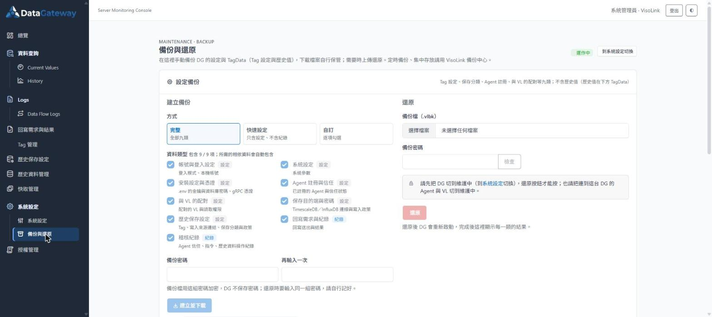
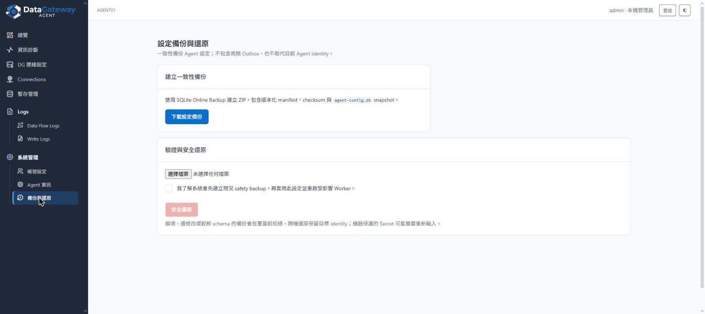
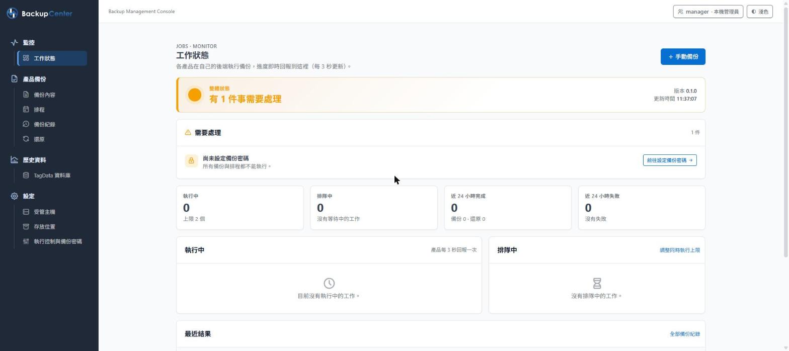
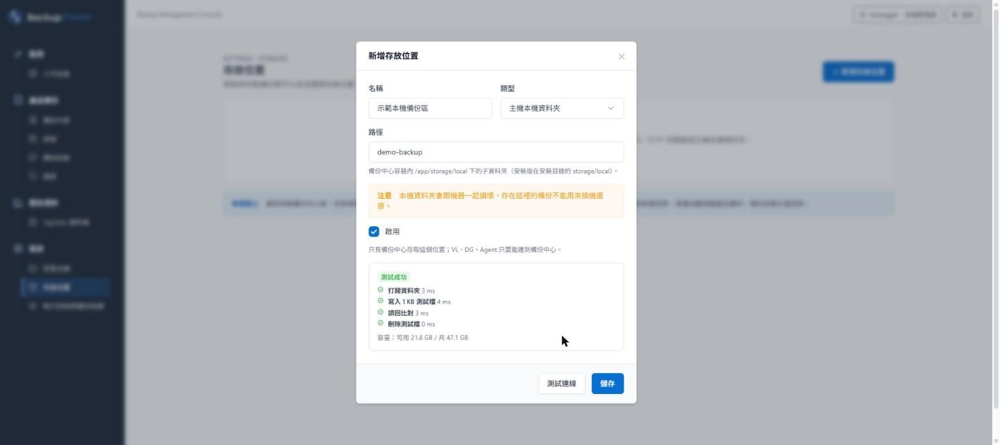
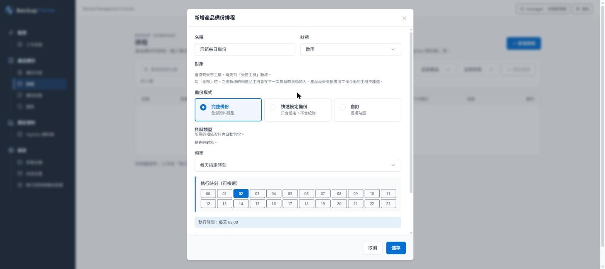
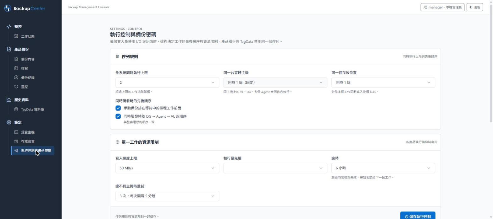

COURSE 08 · BACKUP CENTER
VisoLink
備份中心
集中備份 VisoLink、DataGateway 與 Agent：登記主機、設定存放位置與備份密碼、手動與排程備份、查看紀錄，並在還原前做完該做的檢查。
系統管理員建議 150 分鐘建議先完成 Course 00；VisoLink 自己的備份見 Course 06對應 備份中心 0.1.0
LEARNING OUTCOMES
完成這門課，你能讓備份每天自動發生，並在需要時安全還原
01設定
設定備份密碼與存放位置，登記 VisoLink、DataGateway、Agent 為受管主機。
02備份
選對備份模式，完成手動備份，建立排程與保留份數。
03查核
從工作狀態、備份紀錄與明細確認每台主機都有可用的備份。
04還原
理解四條還原規則，做完事前檢查，分辨原機還原、換機還原與局部還原。
本課對應備份中心操作手冊；按鈕與欄位名稱照畫面原文，用「」標示。
FOUR PRINCIPLES
操作前先記住四個原則，還原時才不會出乎預期
01備份＝定時快照
還原就回到備份當時的狀態；備份之後到故障之間的資料、Agent 緩衝或在途資料不在還原範圍。
02備份中心獨立
備份中心是獨立安裝的系統；VisoLink、DataGateway、Agent 在自己的管理畫面也能手動備份與還原。
03還原時全部停工
還原期間所有受管主機切到維護中，停止收集、接收、寫入與修改；結束後切回原本的模式。
04版本不同不允許還原
主機目前的產品版本必須與備份版本相同；授權不在備份內，換機後向原廠重新申請授權。
TWO WAYS TO BACK UP
產品自己就能備份；備份中心再加上集中管理、排程與自動化

DataGateway 自己的「備份與還原」：左邊建立設定備份、右邊還原（DataGateway 手冊第 12 章）。
Agent 自己的「備份與還原」：下載設定備份、驗證與安全還原（Agent 手冊第 12 章）。產品自己的備份頁
臨時備份、單次還原；VisoLink 的做法見 Course 06。
備份中心
多台主機統一排程、保留份數、集中紀錄、原機與換機還原、TagData 備份。
兩者並存
使用備份中心後，各產品自己的備份頁照常可用。
FIRST-TIME ORDER
安裝後照這個順序設定，就能開始備份
1改成自己的帳密初始帳密第一次登入後立即變更
2設定備份密碼沒有備份密碼，所有備份與排程都不能執行
3新增存放位置正式環境用網路存放位置
4登記受管主機VisoLink、DataGateway、Agent
5手動備份一次確認成功、紀錄正確
6建立排程產品備份排程與 TagData 排程
管理畫面：瀏覽器開啟備份中心的管理位址（預設埠 6301），用備份中心本機帳號登入；同一來源連續 5 次失敗會鎖 5 分鐘。
ACCOUNT
初始帳密只用來第一次登入與救援，日常請用自己的帳密
 右上角帳號選單「變更帳號密碼」：左邊變更帳號密碼，右邊是最近 50 筆操作紀錄。
右上角帳號選單「變更帳號密碼」：左邊變更帳號密碼，右邊是最近 50 筆操作紀錄。- 第一次登入用安裝時的初始帳密登入，只能停在「變更帳號密碼」頁；新密碼至少 12 字元。
- 忘記密碼登入頁勾「使用救援帳號登入」，以初始帳密進入後重設；救援登入不能使用其他功能。
- 變更後所有已登入的視窗都會登出，用新帳密重新登入。
- 檢查操作紀錄確認沒有不明的登入或失敗嘗試。
STATUS
每天先看「工作狀態」：有沒有需要處理的事

「監控 › 工作狀態」：整體狀態橫幅顯示「全部正常」或「有 N 件事需要處理」；頁面每 3 秒自動更新。需要處理
每項都有說明與前往處理的按鈕；第一次安裝後一定會看到「尚未設定備份密碼」。
執行中
對象、進度百分比與目前步驟；還原工作另外列出每台主機的運作中／維護中。
排隊中
排隊順位與原因，例如同一台實體主機已有工作、超過同時執行上限。
最近結果
完成時間、對象、來源（手動或排程名稱）、存放位置、大小、耗時、結果。
BACKUP PASSWORD
備份密碼：遺失就沒有任何方法還原
 「執行控制與備份密碼 › 備份密碼」：未設定時右上角顯示「未設定」，並提醒密碼遺失後所有既有備份都無法還原。
「執行控制與備份密碼 › 備份密碼」：未設定時右上角顯示「未設定」，並提醒密碼遺失後所有既有備份都無法還原。- 設定「設定備份密碼」，至少 12 字元，輸入兩次後「儲存」；右上角變成「已設定」。
- 加密範圍所有備份檔都用這組密碼加密（AES-256-GCM），設定裡的連線密碼也是。
- 變更只套用到之後的新備份；舊備份仍需要舊密碼。
- 換機到了新機器，只要有存放位置與這組密碼就能還原。
備份中心只存驗證資料、不存密碼本身：請用受管控的方式另外保管，不要和備份檔放在同一個位置，也不要寫進文件、訊息或截圖。
STORAGE
存放位置：本機資料夾只能原機還原，正式環境請加網路位置

新增「主機本機資料夾」：測試連線會打開資料夾、寫入 1 KB 測試檔、讀回比對、刪除並顯示容量。主機本機資料夾
填子資料夾名稱；會跟機器一起損壞，標示「不能換機還原」，也不能同步備份中心自己的設定。
SMB、NFS
網路共用資料夾；SMB 填有寫入權限的帳號。
FTP、FTPS、SFTP
FTP 帳密以明文送出，可以的話改用 FTPS 或 SFTP；第一次連線記下指紋，之後不同就拒絕。
每一種都要
按「測試連線」看到「測試成功」與容量，再「儲存」。
STORAGE STATUS
每個存放位置一張卡：狀態、容量與使用中的排程
 存放位置卡片：狀態標示、類型、路徑、使用中的排程、容量與「編輯」「測試連線」「掃描既有備份」。
存放位置卡片：狀態標示、類型、路徑、使用中的排程、容量與「編輯」「測試連線」「掃描既有備份」。- 可寫入／可連線測試通過。
- 連不到滑鼠移到標示上看原因。
- 容量75% 以上變黃、90% 以上變紅；「容量：無法取得」表示伺服器不提供容量查詢，不影響備份。
- 掃描既有備份重新安裝後從存放位置重建備份紀錄。
MANAGED HOSTS
登記受管主機：VisoLink、DataGateway、Agent 各登記一筆
「設定 › 受管主機」右上角「新增」
- 選「產品」：VisoLink（VL）、DataGateway（DG）或 DG-Agent；儲存後不能改
- 填「名稱」（例如「示範廠 VL」）、「位址」（http://主機:連接埠）、「實體主機」
- 在憑證欄貼上產品的備份憑證
- 按「測試連線」，看到「正常」與回應時間
- 按「儲存」，依序登記 VL、DG 與 Agent
各產品的備份憑證
- VisoLink：在 VisoLink 後台建立的 Backup API Token（Course 06）
- DataGateway、Agent：安裝時設定的管理金鑰
- 向系統管理員取得，不要寫在文件或訊息裡
- 「實體主機」相同的服務會依序備份，不會同時搶資源
完成判斷：清單出現這台主機，連線顯示「正常」並帶出產品版本。換機後記得在這裡更新位址與憑證；憑證欄留空表示不變更。
HOST STATUS
連線狀態決定這台主機能不能備份與還原
正常可以備份與還原。
連不到位址錯誤、服務沒開或網路不通；位址要用備份中心伺服器連得到的位址與連接埠。
憑證錯誤Token 或管理金鑰錯誤，或 VisoLink 的 Token 沒有備份權限。
產品尚未支援備份工作介面產品版本太舊，不能選來備份或還原。
資料類型不一致產品回報的資料類型與備份中心不同，請確認兩邊版本。
已停用不檢查連線、不派工，排程會略過；有備份紀錄的主機只能停用、不能刪除。
狀態每 60 秒自動更新，「最後檢查」顯示時間；按「最後成功備份」的時間可跳到該主機的備份紀錄。
BACKUP CONTENT
三種備份模式：完整、快速設定、自訂
 「產品備份 › 備份內容」：分頁切換 VisoLink、DataGateway、DG-Agent；表格列出資料類型、是否屬於快速設定、相依類型與換機必要。
「產品備份 › 備份內容」：分頁切換 VisoLink、DataGateway、DG-Agent；表格列出資料類型、是否屬於快速設定、相依類型與換機必要。完整備份
全部資料類型：VisoLink 9 項、DataGateway 9 項、Agent 8 項。
快速設定備份
只含設定類，不含紀錄：VisoLink 6 項、DataGateway 7 項、Agent 6 項。
自訂
逐項勾選；「勾選時自動帶入」的相依類型會一起包含，不能單獨取消。
換機必要
要能換機還原，備份必須含標示「換機必要」的類型；完整與快速設定都有。
NOT IN BACKUP
先知道什麼不在產品備份裡，才不會以為「全部都備份了」
授權
三種產品的授權都不在備份內；換機後向原廠為新機器重新申請授權。
Tag 歷史值與最新值
屬於 TagData，在「TagData 資料庫」另外備份；手動備份頁不含歷史值。
Agent 的緩衝資料
Tag 值都送進 DataGateway，不在 Agent 保存，也不在 Agent 備份內。
加密金鑰
產品的加密金鑰不放進備份；備份時解開密碼，整包改用備份密碼加密。
VisoLink 安裝設定
重新安裝即有，不在 VisoLink 備份內。
DataGateway 安裝設定
「安裝設定與憑證」在 DataGateway 備份內，換機時用「安裝設定包」帶到新機器。
MANUAL BACKUP
手動備份：選對象、模式與存放位置，排入佇列
01開啟
「工作狀態」右上角「手動備份」；或在「受管主機」該列按「手動備份」，對象會先勾好。
選對象與模式
勾選主機（連不到或尚未支援的主機不能選）；選「完整備份」「快速設定備份」或「自訂」。
選存放位置與備註
選要寫入的位置；「備註」寫用途，最多 200 字。
開始備份
按「開始備份」，工作排入佇列，在「排隊中」或「執行中」看到它。
手動備份不會自動刪除：不受排程保留份數影響，需要時到「備份紀錄」自行刪除。備份執行期間會使用產品主機的 I/O 與記憶體。
VERIFY THE BACKUP
「成功」之後還要確認：紀錄、明細、最後成功備份
1排隊中看排隊原因；手動備份預設排在等待中的排程工作前面
2執行中進度百分比與步驟
3最近結果結果「成功」、大小與耗時
4備份紀錄來源「手動」那一筆按「明細」核對
核對明細
主機、時間點、版本、備份模式與包含的資料類型；「受管主機」的「最後成功備份」更新為這個時間。
一直排隊
同一台實體主機上的 VL、DG、Agent 依序執行；或已達全系統同時執行上限。
提示不能換機還原
這份備份缺少換機必要的類型，只能原機還原。
SCHEDULES
排程：讓備份每天自動發生，並自動清理舊的份數

「產品備份 › 排程 › 新增排程」：名稱與狀態、對象、備份模式與資料類型、頻率、存放位置與保留份數。- 對象勾選主機，或勾某產品的「全部（含之後新增的）」。
- 頻率每 N 小時、每天指定時刻、每週、每月（1～28 日或最後一天）；按「預覽接下來 3 次」確認。
- 保留份數1～999，每台主機各保留 N 份，超過時從最舊的開始刪除。
- 立即執行與停用「立即執行」馬上排入一次；「狀態」改「停用」不會刪除既有備份。
到點沒執行：尚未設定備份密碼，或排程是停用狀態。上一次同排程同主機還沒完成時，這次會略過並在「下次執行」欄寫出原因。
EXECUTION CONTROL
佇列與資源限制：備份不能拖慢產品運作

「執行控制與備份密碼」：上半部佇列規則、下半部單一工作的資源限制，一起按「儲存執行控制」。同時執行
全系統 1～4 個；同一台實體主機固定 1 個；同一個存放位置 1 或 2 個。
觸發順序
同時觸發時依 DG → Agent → VL，與整套還原的順序一致。
資源限制
寫入速度上限（不限制、50、20、5 MB/s）、執行優先權（一般或低）。
逾時與重試
逾時 1、3、6、12 小時；連不到主機時不重試或重試 3 次。
備份拖慢產品：降低寫入速度上限，或把執行優先權改成「低」。大型備份逾時失敗：把逾時調長。
BACKUP RECORDS
備份紀錄：找到要還原的那一份，先看明細
查詢與篩選（「產品備份 › 備份紀錄」）
- 搜尋主機、來源或存放位置；篩選主機、來源（排程／手動）、產品與日期
- 「掃描找回」：從存放位置重建的紀錄
- 「檔案遺失」：檔案已不在存放位置
- 沒有紀錄：還沒有備份，或重新安裝後尚未「掃描既有備份」
明細與後續動作
- 核對主機、時間點、版本、來源、模式、存放位置與大小、使用哪一天設定的備份密碼
- 明細的「版本」是備份當時的產品版本，還原時必須相同
- 「用這份還原」直接帶入還原頁
- 只有手動備份能「刪除」；排程備份依保留份數自動清理
DataGateway 安裝設定包（換機用）：含 DataGateway 憑證與各種金鑰，下載時輸入備份密碼；放進新機器後請刪除下載的檔案，不要寄送或放在共用資料夾。
RESTORE RULES
還原分四步；開始之前，四條規則都要成立
 「產品備份 › 還原」：選主機、選備份、還原方式與內容、確認並開始。
「產品備份 › 還原」：選主機、選備份、還原方式與內容、確認並開始。- 回到快照選的內容退回備份時間點，之後的變更不會保留。
- 全部停工開始還原時所有受管主機切到「維護中」，結束或失敗後切回原本的模式。
- 版本相同主機目前的產品版本必須與備份版本相同，版本不同不允許還原；請先裝成相同版本。
- 授權不在備份換機還原後，新機器的授權向原廠重新申請並啟用。
還原期間 VisoLink、DataGateway、Agent 都不收集、不寫入：會留下一段沒有資料的時間。請勿在還原期間到產品管理畫面手動切回運作中。
PRE-RESTORE CHECK
按下「開始還原」之前的事前檢查
人與時間
- 已安排停機時段，並通知 VisoLink 畫面、回寫與現場資料的使用者
- 已確認可以接受「回到備份時間點、之後的變更不保留」
- 已確認還原期間不收集資料造成的資料缺口
系統條件
- 手上有這份備份當時使用的備份密碼（明細會寫是哪一天設定的）
- 主機目前的產品版本與明細的「版本」相同
- 「還原期間所有受管主機切到維護中」清單每台都連得上；連不到的標紅，按「重新檢查」
- 換機還原：備份含「換機必要」的類型；新機器已裝相同版本並顯示「已連上」
判斷可以停工、版本一致、密碼在手、主機都連得上，才開始還原；任一項不成立就停下來處理。
SAME HOST vs REPLACEMENT
機器還在用原機還原；機器壞了用換機還原
原機還原
- 選主機與「備份時間點」（或從備份紀錄按「還原」帶入）
- 「還原到」選「原機還原」
- 選還原模式與衝突策略，輸入備份密碼
- 確認維護中清單每台都連得上，按「開始還原」
- 看「還原進度」：每台主機的維護中狀態、每一類資料的結果與筆數
換機還原
- 新機器沿用原機的 IP 或主機名稱，安裝相同版本的產品
- VisoLink、Agent：全新安裝後到「受管主機」更新位址與憑證
- DataGateway：用「下載安裝設定包」安裝，再確認受管主機的位址與管理金鑰
- 畫面顯示「新 VL／新 DG／新 Agent 已連上」後，「還原到」選「換機還原」
- 舊主機已停機連不到時，在維護中清單勾「這台已停機」（記入稽核）
換機後：DataGateway 換機後 Agent 不必改設定就會自動連回；Agent 換機後 DataGateway 認得是同一台。DataGateway 換機要先還原產品備份，再還原 TagData；Agent 換機後連線先停用，切回運作中並確認授權後才啟用。
PARTIAL & CONFLICT
局部還原只動勾選的類型；衝突策略決定現有資料怎麼處理
還原模式
- 「全面還原」：還原這份備份裡的全部類型
- 「局部還原」：逐項勾選，至少一項；相依類型自動帶入，其他資料不動
- DataGateway 做過 TagData 還原後再勾「歷史保存設定」，Tag 與保存分類會回到產品備份的時間，與 TagData 不一致
衝突策略
- 「覆蓋」：以備份為準，現有的同一筆資料會被蓋過；需要完全回到備份時間點時使用
- 「僅新增資料」：現有的保留，只補上備份有、現在沒有的；只想找回被刪掉的資料時使用
- 還原結果表每一類顯示完成、略過或失敗與筆數
TAGDATA
Tag 歷史值在「TagData 資料庫」另外備份
DataGateway 內建 TimescaleDB
- 「立即備份」：「完整」或「差異」（依附最近一次完整）
- 新增 DataGateway 時預設兩個排程：每週日 02:00 完整（保留 2 套）、每天 03:00 差異
- 一台 DataGateway 的 TagData 只用一個存放位置，完整與差異才接得上
- 還原會讓整個資料庫退回備份點，之後的資料不保留
InfluxDB（保存目的端）
- DataGateway 設定 InfluxDB 保存目的端後，每個實體位置一列
- 第一次按「開始初始化」，只在允許時段內分好幾個晚上讀完全部歷史
- 之後「立即差異」或「立即完整」；備份點保留最近 7 天
- 還原前看「還原前檢查」：有錯誤不能開始，警告要勾選確認
TagData 還原失敗時：DataGateway 會刻意維持維護中，畫面顯示需再還原一次；版本不同、資料庫密碼不同或暫存區空間不足時，DataGateway 會拒絕並說明原因，資料庫不會被動到。
SELF BACKUP
備份中心自己的設定也要能在新機器回來
同步自己的設定
- 「執行控制與備份密碼 › 備份中心自己的設定」選一個網路存放位置（本機資料夾不能選）
- 每次異動 1 分鐘內自動存一份，用備份密碼加密，保留最近 30 份
- 右上角顯示「已同步」與最後同步時間
在新機器還原備份中心
- 新機器安裝備份中心並完成第一次登入
- 新增原本同步用的存放位置，按「掃描既有備份」
- 輸入原備份密碼，「預覽」後「確認覆蓋目前設定」
- 確認受管主機連線正常、排程與原本一致、備份紀錄都回來、沒有「需要處理」
OPERATIONS CHECKLIST
把備份變成固定節奏，而不是出事才想到
每天
- 工作狀態「全部正常」
- 近 24 小時沒有失敗
- 每台受管主機連線「正常」
每週／每月
- 每台主機「最後成功備份」符合排程
- 存放位置容量未變黃、變紅
- 備份中心自己的設定「已同步」
- 確認保留份數足夠還原需求
升級與換機前後
- 升級前做一次完整備份
- 升級後新備份的版本已更新（舊版本的備份不能還原到新版本）
- 換機後更新受管主機的位址與憑證，重新申請授權
HANDS-ON
在自己的測試環境完成一次備份循環
01登記受管主機
以測試用 Backup API Token 或管理金鑰登記 VisoLink、DataGateway、Agent 各一台，連線都顯示「正常」並帶出版本。
設定存放位置與備份密碼
新增一個存放位置並測試連線；設定備份密碼並以受管控方式保管；工作狀態不再出現「尚未設定備份密碼」。
手動備份
對三台主機各做一次「快速設定備份」，備註寫用途；在工作狀態追蹤到「成功」。
看紀錄
在備份紀錄找到這三筆，打開明細核對版本、模式、資料類型與能否換機還原；建立一個每天執行、保留 7 份的排程並預覽接下來 3 次。
還原的事前檢查
在還原頁選其中一台與剛才的備份，走到確認步驟：核對版本、維護中清單每台連得上、備份密碼在手；完成事前檢查表，不按「開始還原」（講師同意時才在測試環境執行）。
Token、管理金鑰與備份密碼不得寫入作業紀錄或截圖。
ASSESSMENT
Course 08 驗收：備份可用、可追溯，還原前的判斷正確
現場驗收
- 工作狀態「全部正常」，三台受管主機連線正常
- 備份紀錄有三筆手動備份，明細內容學員能逐項說明
- 排程已建立，預覽時間正確，保留份數有理由
- 完成還原事前檢查表，每一項都有依據
口頭問答
- 為什麼還原後會少一段資料？還原期間為什麼所有主機都停工？
- 備份密碼遺失會怎樣？變更密碼後舊備份要用哪一組？
- 升級後，舊版本的備份還能還原嗎？
- Tag 歷史值、授權在不在產品備份裡？要怎麼處理？
通過標準每台主機都有可用的備份與排程，備份密碼與憑證受到保護，並能在還原前正確判斷停工、版本與密碼三項條件。
返回教育訓練課程目錄 →